Disegnare una traccia#
Questa pagina mostra come disegnare una tua traccia, con il router di Configurare il routing.
Le immagini usano inoltre la mappa di Attivare le mappe, il DEM di
Dati altimetrici e ombreggiatura e Example.gpx di
Caricare un file GPX.
Immagini: © OpenStreetMap contributors; Datenquelle: Land Tirol - data.tirol.gv.at, CC BY 4.0;
Example.gpx: fuzzybear, CC BY-SA 4.0.
Iniziare una traccia#
Mentre disegni, una barra nella parte superiore della mappa contiene gli strumenti di disegno. Salva come nuovo salva la traccia (vedi Salvare la traccia); Annulla la scarta.
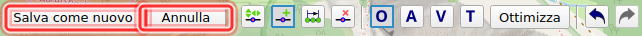
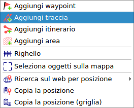
Fai clic con il tasto destro sul punto della mappa in cui deve iniziare la traccia e fai clic su Aggiungi traccia. Se tieni premuto per un momento il tasto sinistro del mouse sulla mappa, si apre lo stesso menu.
Sposta il mouse dove prosegue la traccia e fai clic. Ogni clic aggiunge un punto, e una linea retta lo unisce al punto precedente. Per le linee rette, nella barra deve essere attiva O. Se è attiva un’altra lettera, fai prima clic su O.
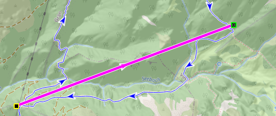
Quando la traccia è finita, fai clic con il tasto destro per smettere di aggiungere punti. Per continuare a disegnare, sposta il mouse appena oltre il primo o l’ultimo punto finché un quadrato rosso non lo evidenzia, e fai clic.
Disegnare lungo i sentieri#
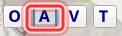
Mentre aggiungi punti, fai clic su A nella barra oppure premi il tasto A.
Sposta il mouse sul punto successivo e tienilo fermo per un momento. Il router trova il percorso lungo sentieri e strade, e la linea lo segue. Calcola il percorso con il profilo selezionato nel riquadro Routing. Fai clic per aggiungere quel tratto alla traccia.
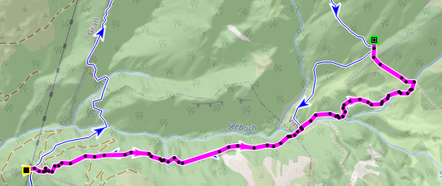
A richiede un router che calcoli il percorso al volo; vedi Cosa fa un router. Senza un router di questo tipo, il suo pulsante è grigio. La lettera attiva quando salvi o annulli la traccia torna attiva quando inizi la successiva.
Disegnare lungo una traccia#
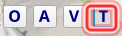
Fai clic con il tasto destro su una traccia caricata, per esempio quella di
Example.gpx, nel punto in cui deve iniziare la tua traccia. Poi fai clic su Aggiungi traccia, quindi su T nella barra oppure premi il tasto T.Sposta il mouse lungo quella traccia fino al punto successivo. QMapShack mostra quella traccia in giallo, e la tua linea la segue. Funziona solo se il tuo ultimo punto e il puntatore del mouse si trovano entrambi su quella traccia. Fai clic per aggiungere quel tratto alla traccia.
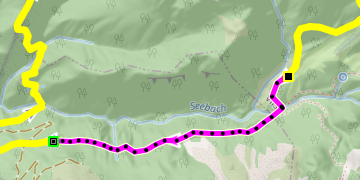
Linee rette e mappe vettoriali#
Fai clic su O oppure premi il tasto O per tornare a disegnare linee rette. V, o il tasto V, segue le linee di una mappa vettoriale, come una mappa Garmin. Ti serve raramente: la mappa e i dati di routing di solito vengono entrambi da OpenStreetMap, quindi A segue già gli stessi sentieri.
Correggere la traccia#
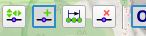
Usa i quattro pulsanti a destra di Annulla per modificare i punti della linea. Da sinistra a destra, spostano punti, aggiungono punti, selezionano un intervallo di punti ed eliminano punti.
Per spostare un punto, fai clic sul primo pulsante o premi Ctrl+M. Fai clic sul punto, sposta il mouse e fai di nuovo clic per rilasciarlo.
Per aggiungere un punto, fai clic sul secondo pulsante o premi Ctrl++. Fai clic sulla linea tra due punti: il nuovo punto resta attaccato al mouse. Fai di nuovo clic per rilasciarlo. Per aggiungere punti all’inizio o alla fine, sposta il mouse appena oltre il primo o l’ultimo punto. Quando un quadrato rosso evidenzia quel punto, fai clic. Ogni clic aggiunge lì un punto; fai clic con il tasto destro per terminare.
Per selezionare un intervallo, fai clic sul terzo pulsante o premi Ctrl+R. Poi fai clic sul primo e sull’ultimo punto dell’intervallo. Compaiono due pulsanti: uno elimina i punti intermedi, l’altro ricollega i due punti. La lettera attiva nella barra decide come.
Per eliminare un punto, fai clic sul quarto pulsante o premi Ctrl+-, poi fai clic sul punto.
Quando sposti, aggiungi o elimini un punto, QMapShack ricollega i punti vicini. La lettera attiva nella barra decide come. Per annullare lo spostamento o l’aggiunta di un punto, fai clic con il tasto destro o premi Esc.
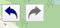
I pulsanti a freccia all’estremità destra della barra annullano e ripristinano l’ultima modifica.
Salvare la traccia#
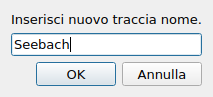
Fai clic su Salva come nuovo nella barra. Inserisci un nome per la traccia e fai clic su OK.
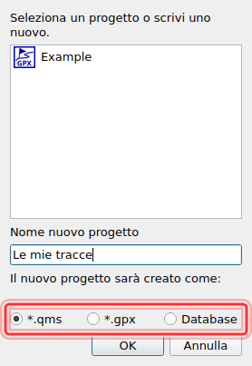
Seleziona il progetto in cui va la traccia, oppure inserisci un nome per un nuovo progetto in Nome nuovo progetto.
Per un nuovo progetto, dopo aver inserito il nome, scegli sotto Il nuovo progetto sarà creato come il formato in cui QMapShack lo salva. *.qms è il formato di file proprio di QMapShack, *.gpx un file GPX che leggono anche altri programmi e dispositivi. QMapShack ne preseleziona uno, quindi controlla che sia quello che vuoi. La terza opzione, Database, è spiegata in Database.
Fai clic su OK.
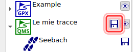
Il riquadro Spazio di lavoro ora elenca la traccia sotto il suo progetto.
Il pulsante di salvataggio nella riga del progetto, evidenziato nell’immagine, indica che il progetto ha modifiche non salvate in un file. Fai clic su di esso per salvare il progetto.
La prima volta che salvi il progetto, QMapShack chiede dove salvarlo. La finestra di dialogo propone il nome del
progetto come nome del file. Si apre nella cartella da cui hai caricato o in cui hai salvato l’ultima volta. Se hai
impostato la cartella home, QMapShack apre la finestra di
dialogo nella sottocartella GPX della cartella home.
Nella riga della traccia, lo stesso simbolo non è un pulsante ma un indicatore di modifica. Mostra che la traccia è cambiata dall’ultimo salvataggio del progetto.
Quote dal DEM#
Mentre disegni, il box Metriche Traccia in alto a sinistra sulla mappa mostra la lunghezza della traccia e quanto sale e scende. Le quote vengono dal DEM; vedi Dati altimetrici e ombreggiatura. Quindi attiva il DEM prima di disegnare, e disegna dove il DEM ha dati.
Quando salvi la traccia, QMapShack assegna ai suoi punti la quota del DEM. Dove il DEM non ha dati, il punto resta senza quota. In tal caso Metriche Traccia mostra Quote non valide! al posto della salita e della discesa.
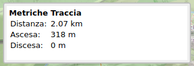